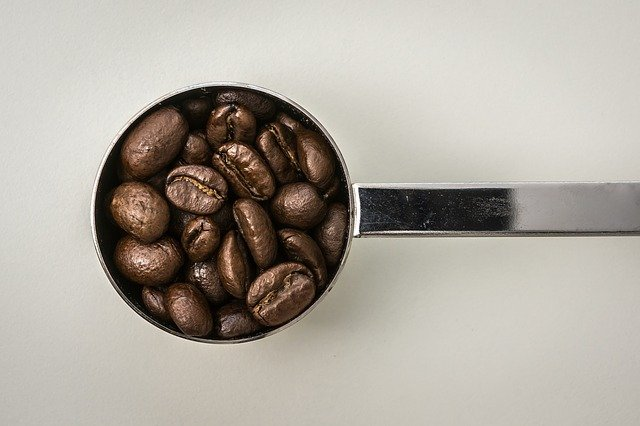

커피는 하루에 몇잔 마셔야 좋을까?
카페인 섭취는 장단점이 있다.카페인은 자극 효과로 인해 주의력, 운동능력 향상, 신진대사 증가 등의 이점이 있다.
하지만 카페인을 단일 용량으로 500㎎을 초과해 섭취할 경우 우리 몸에는 다양한 증상이 나타난다.
불안 장애, 수면 방해 등의 문제들이 있다. 따라서 적정량의 섭취를 하고있는지 확인이 필요하다.
한국 식품의약품안전처에 따르면, 일일 최대 섭취 권고량 약 400mg(성인 남성 기준. 여성, 특히 임산부의 경우 300mg, 30kg 어린이는 75mg 이하)으로 이는 일반적인 성인이 섭취하였을 시에 부작용이 없을 것으로 예상되는 수치이다.